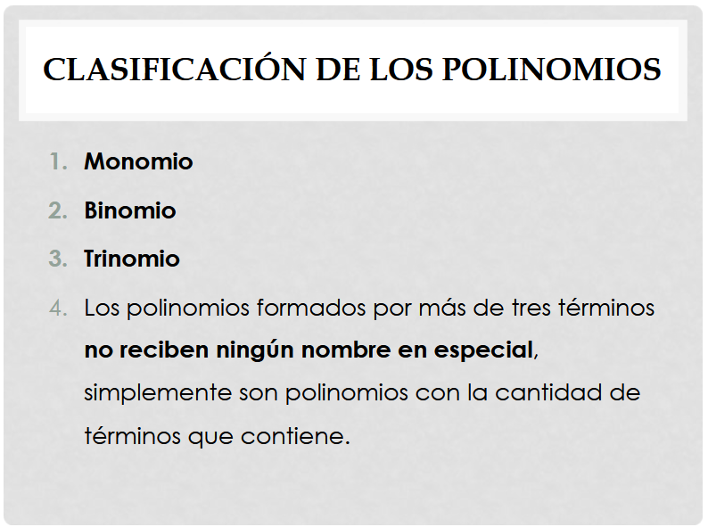
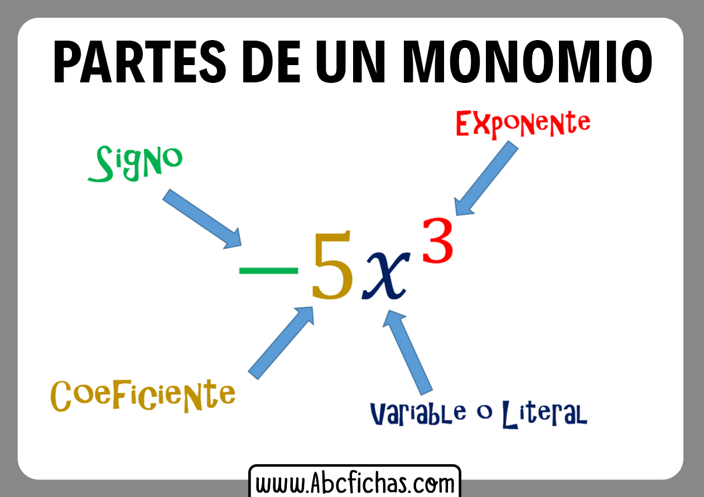
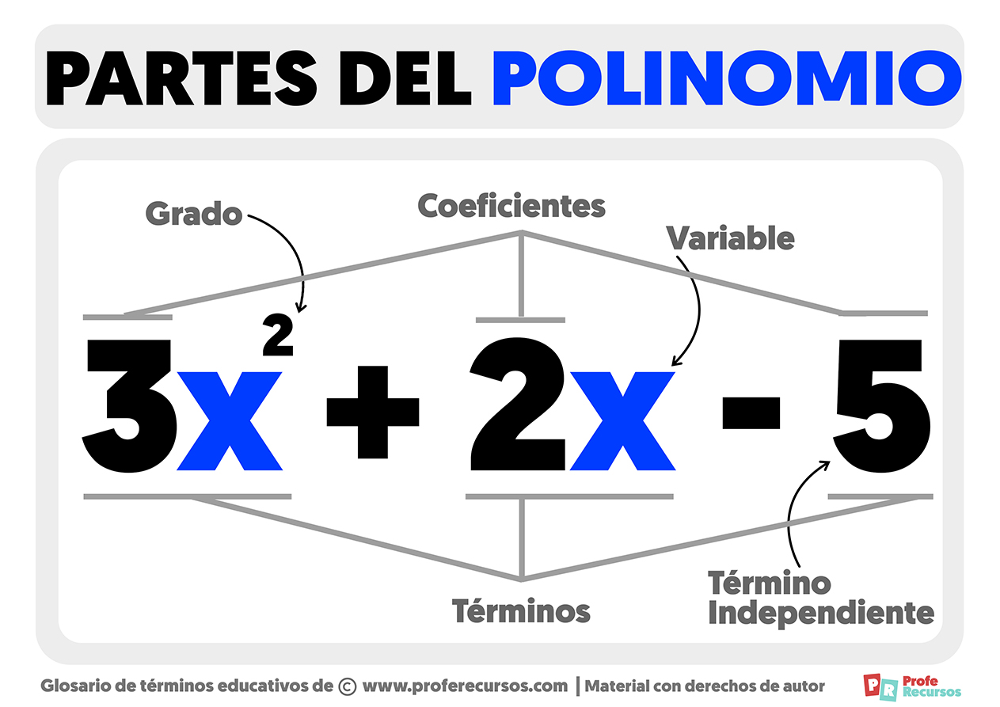

FACTOR COMÚN
Cuando todos los términos de un polinomio tienen un factor común. El primer caso de factores se divide en dos partes que son: factor común monomio y factor común polinomio.
Se denomina polinomio a la suma de varios monomios. Un monomio es una clase de polinomio con un único término.
 MONOMIO Tomado: https://slideplayer.es/slide/14210725/
Características:
· Mínimo tiene que tener un término.
· Tiene que tener una letra o un número
· Partes literal
·

POLINOMIO
Características:
Mínimo tiene que tener dos términos.
El común debe de ser el menor exponente y el menor número de coeficiente.
Debe ser posible repartir en factores.
Pasos para desarrollar un ejercicio de factor común:
· Se busca la variable común.
· Luego se divide para cada uno de sus factores.
· Entonces queda.
· Se resuelve primero lo del paréntesis.
· Por último se multiplica los dos números.

RECOMENDACIÓN
Cuando hablamos de factorizar, podemos seguir las siguientes recomendaciones:
1. Observar si hay un factor común, esto es, si hay un factor que se repita en los diferentes términos.
2. Ordenar la expresión: a veces al arreglar la expresión nos percatamos de las posibilidades de factorización.
3. Averiguar si la expresión es factorizable: en ocasiones estamos en presencia de expresiones que no pueden ser descompuestas en factores.
4. Verificar si los factores hallados son a su vez factorizables